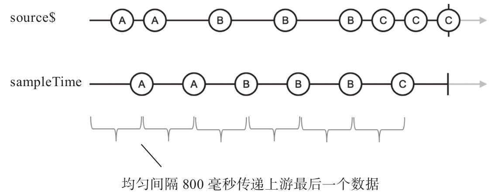
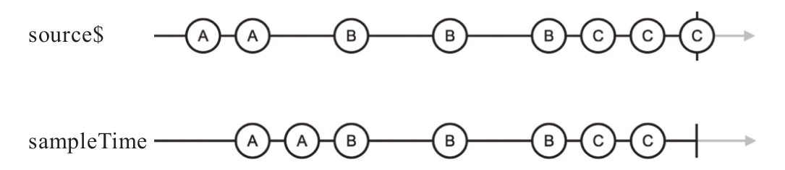

sample的含义就是“采样”，从字面上就看得出来，sample是要根据规则在一个范围内取一个数据，抛弃其他数据。
RxJS同样提供sample和sampleTime两个操作符，为了便于理解，还是从sampleTime入手，下面是使用sampleTime的示例代码：
import {Observable} from 'rxjs/Observable';
import 'rxjs/add/observable/interval';
import 'rxjs/add/operator/concat';
import 'rxjs/add/operator/mapTo';
import 'rxjs/add/operator/take';
import 'rxjs/add/operator/sampleTime';
const source$ = Observable.interval(500).take(2).mapTo('A')
.concat(Observable.interval(1000).take(3).mapTo('B'))
.concat(Observable.interval(500).take(3).mapTo('C'));
const result$ = source$.sampleTime(800);
介绍sampleTime我们直接上一个比较复杂的上游数据，是因为简单的数据流还真的无法体现sampleTime与throttleTime、auditTime的区别。
上面代码实例对应的弹珠图如图7-20所示。

图7-20 sampleTime的弹珠图
可以看到，sampleTime不管上游source$产生数据的节奏怎样，完全根据自己参数指定的毫秒数间隔节奏来给下游传递数据，上面的例子中sampleTime的参数是800，所以，sampleTime实际上把时间分为800毫秒长度的时间块，sampleTime会记录每一个时间块上游推下来的最后一个数据，到了每个时间块结尾，就把这个时间块上游的最后一个数据推给下游。
表面上看sampleTime和auditTime非常像，auditTime也会把时间块中最后一个数据推给下游，但是对于auditTime时间块的开始是由上游产生数据触发的，而sampleTime的时间块开始则和上游数据完全无关，所以，可以看到sampleTime产生的数据序列分布十分均匀。
注意，如果sampleTime发现一个时间块内上游没有产生数据，那在时间块结尾也不会给下游传递数据，比如，修改上面代码中sampleTime的参数如下：
const result$ = source$.sampleTime(500);
那么对应的弹珠图如图7-21所示。

图7-21 sampleTime在参数为500时的弹珠图
sampleTime传递给下游的数据间隔虽然不均匀，但是依然是参数500毫秒的整数倍。
然后来看sampleTime的高级形式sample，和之前介绍的throttle、debounce和audit不同，sample的参数并不是一个返回Observable对象的函数，而就是一个简单的Observable对象。sample之所以这样设计，是因为对于“采样”这个动作，逻辑上可以认为和上游产生什么数据没有任何关系，所以不需要一个函数来根据数据产生Observable对象控制节奏，直接提供一个Observable对象就足够了。
通常sample的参数被称为notifier，当notifier产生一个数据的时候，sample就从上游拿最后一个产生的数据传给下游。
sample在网页应用中有非常实际的应用，比如，在网页中用DOM事件取样当前的状态，假设HTML有下面的结构：
<button id="sample">Sample</button> <div id="text">0</div>
我们希望点击Sample按钮的时候，id为text的div中会显示逝去的时间，这种方式可以有很多实现方式，利用sample的实现方式如下：
const notifer$ = Rx.Observable.fromEvent(document.querySelector('#sample'), 'click');
const tick$ = Rx.Observable.timer(0, 10).map(x => x*10);
const sample$ = tick$.sample(notifer$);
sample$.subscribe(value => {
document.querySelector('#text').innerText = value
});
在上面的代码中，tick$以10毫秒的间隔产生递增数据，产生的结果再乘以10基本上近似于从被订阅到现在的毫秒数，当然也可以直接用timer（0，1），这样就用不上map了，但是那样产生的数据过多，而且没有必要达到那样的精度。
tick$产生的数据经过sample过滤，并不会全部都被下游接收到，只有当参数notifer$产生一个数据的时候，sample就会从上次产生数据到现在的时间段里提取最后一个数据传给下游，这个数据肯定就是订阅以来逝去的毫秒数。